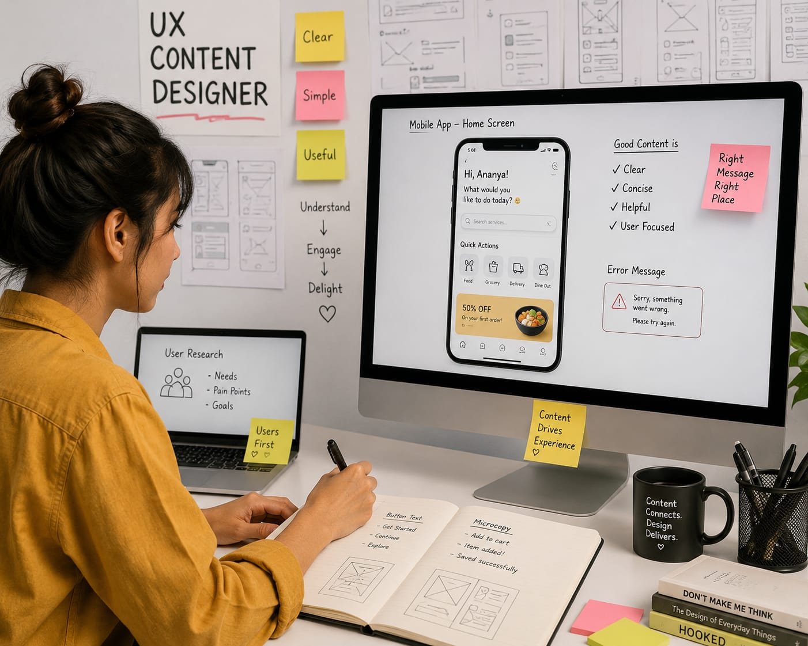

- When you open apps like Instagram, Zomato, or Spotify, you can easily understand where to click and what to do.
- Someone carefully designed these experience.
- These professionals are called UX / Content Designers.
- 👉 In simple words: UX / Content Designers make apps and websites simple and user-friendly.
UX / Content Designer
What Do They Do?

🎓 How to Become a UX / Content Designer
The courses to pursue this career are given below :
These programs provide the critical foundational understanding of creative digital media, long-form content structuring, and language mechanics.
B.Des in Communication Design
Duration: 4 Years
Eligibility: 10+2 Pass
Entrance Exam: UCEED / NID DAT/ University Entrance Exam
B.Des in Interactive Design (UX/UI)
Duration: 4 Years
Eligibility: 10+2 Pass
Entrance Exam: UCEED / NID DAT/ University Entrance Exam
Note: Most diploma programs offer direct admission, while top universities may require CUET or merit-based selection.
These advanced programs help students specialize in UX writing, digital communication, content systems, and high-level user experience strategy roles.
M.A in Journalism & Mass Communication
Duration: 2 years
Eligibility: Graduate
Entrance Exam: CUET-PG / University Entrance Exam
Post Graduate Diploma in Journalism and Mass Communication
Duration: 1 Year
Eligibility: Bachelor’s Degree (Any stream)
Entrance Exam: Entrance Exam & Interview
Note: Many private institutes offer direct admission, while reputed journalism and communication institutes may conduct entrance exams and interviews.
Note:
(Age limits, marks, and admission process may vary depending on the college or state. These courses are available in many colleges and universities across India. You can choose colleges based on your location, budget, and entrance exams.)
🏛️ Top Colleges for UX / Content Designer
(Tap on a college to view the details)STEP 1
Imagine you are working as a UX / Content Designer.
STEP 2
A company asks you to improve the user experience of their mobile app or website.
STEP 3
You study how people use the app and identify areas where users get confused.
STEP 4
You write simple button texts, app messages, and instructions that help users understand everything easily.
STEP 5
You work with designers and developers to organize screens, menus, and user journeys.
STEP 6
Finally, users enjoy a smooth and easy experience while using the app or website.
STEP 7
If this excites you, this career may suit you.
Where do UX / Content Designers work? (Job Roles + Growth)
UX / Content Designers work in : Technology companies, Software and app development companies, Design agencies, Digital product companies, e-commerce companies, Fintech companies, Media companies, and as Freelance or Independent designers.
🟢 Beginner Roles
Junior UX Writer
(After Diploma in Content Writing & Digital Media)
Writes simple button labels, app messages, and menu text for digital products.
UX Content Coordinator
(After B.A. English)
Organizes content files and checks app screens for clarity and spelling.
🔵 Mid-Level Roles
UX / Content Designer
(After Diploma / B.A. English + 2–3 Years of Experience)
Plans app text layouts and helps users navigate websites and apps easily.
Localisation Specialist
(After Diploma / B.A. English + 2–3 Years of Experience)
Rewrites and adapts app content for different languages and regions.
🟣 Advanced Roles
Senior Content Designer
(After Post Graduate Program / PG Diploma + 5+ Years of Experience)
Designs complex user journeys and creates brand content guidelines.
Content Design Lead
(After Post Graduate Program / PG Diploma + 8+ Years of Experience)
Leads content design teams and builds communication systems for tech products.
Global Tech Giants
Create simple and user-friendly interfaces for millions of users worldwide.
E-commerce & Product Platforms
Improve shopping experiences, app navigation, and product communication.
Fintech & Banking Companies
To simplify complex financial apps and digital payment systems.
International Design Agencies
To create digital experiences, mobile apps, and websites for global clients.
(Click Yes or No for each question)
1. When you use an app, have you noticed how the buttons and menus look?
2. Have you ever thought about how these buttons and menus are designed?
3. Do you like creative work?
4. Imagine a company is developing a new food delivery app. The development team is building the app. Your role as a UX/Content Designer is to create the design of the screen of the app. (what user sees) You plan how the buttons, menus, and other information should appear. You make the design easy for users to understand and use. Finally, when the app is launched, customers start using it with the design you created. Does this type of work excite you?
5. A company finds that many users are confused while using its shopping app. They ask you to improve the app's design. You check the app and find the parts that are difficult to understand. You change the buttons, menus, and words to make them clearer. After the changes are made, users find the app easier to understand and use. Does this type of work interest you?